windows server 2003 php 环境搭建
一、前言
windows server 2003是目前国内比较主流的服务器操作系统，其搭建php的环境也是多种多样，其中IIS+Fastcgi+php+mysql安装时最简单的。
二、安装环境
- 2.1 安装IIS
-
IIS是windows平台下比较成熟的web服务，安装方法也非常简单。
打开“开始”菜单，点击“管理您的服务器”(如图1所示），点击“添加或删除角色”（如图2所示）。
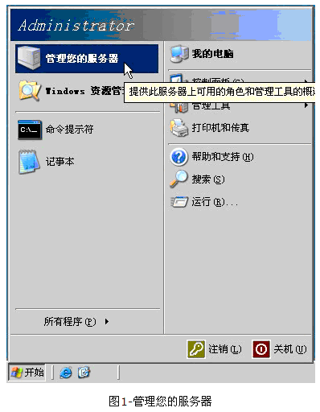
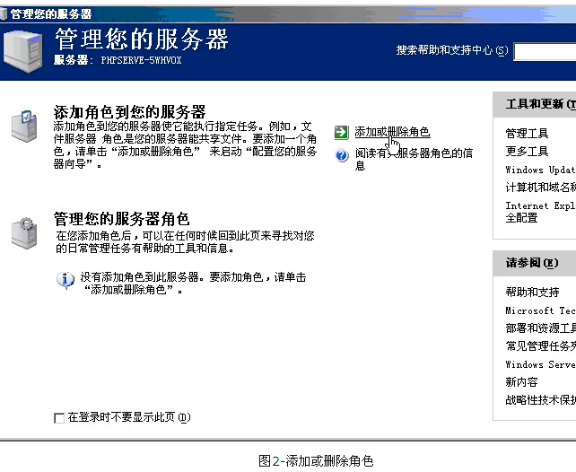
进入预备步骤后直接点下一步。到达了选择角色的地方，选择“应用程序服务（IIS,ASP.net)”（如图3所示）
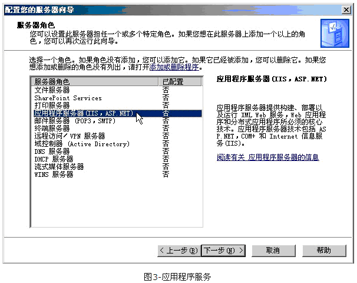
之后点击下一步，出现附加组件的选择，一个是FrontPage Server Extentions，另外一个是ASP.net，这两项我们的环境中都不需要，不必选择，如果有需要，可以选择性安装。进入下一步，是选项总结，再下一步，进入安装过程，此时提示需要插入windows 2003(R2)的安装光盘，插入光盘后，选择光驱所在驱动器下的I386，点击确定，安装过程将会继续一直到结束，并且出现成功提示(如图4所示）

完成后对IIS进行测试，打开“开始”菜单，点击“所有程序”，进入“管理工具”，点击“internet信息服务(IIS)管理器”
展开“网站”树型节点，删除默认网站，然后新建一个网站（如图5所示）
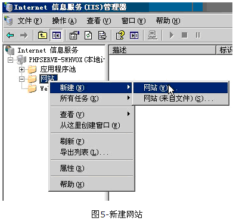
进入向导后，进入下一步，为网站添加描述，也就是IIS中显示的网站标示，可以随便填写，再进入下一步，为网站配置主机头，我们是用来配置本地测试环境，所以把主机头配置为127.0.0.1（如图6所示）
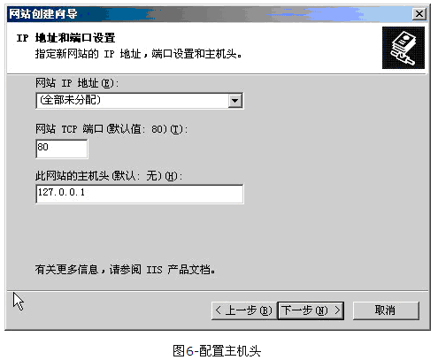
进入下一步，选择目录，目录需要提前建立好，然后选择即可。继续下一步，需要选择网站权限，这里只选择读取即可。之后便可完成网站新建向导了。
下面要为目录配置权限，首先先在网站名称上点击右键，进入“权限”选项，进入“权限”之后点击“添加”按钮，点击“高级”，然后点击“立即查找”，找到IUSR_%计算机名%，选择之后点击确定，此时回到了权限选项的位置，除了“完全控制”和“特殊权限”之外全部勾选，最后点击“应用”。权限配置好后，在目录中新建一个index.html文件，随意输入一些文字或者html代码即可。
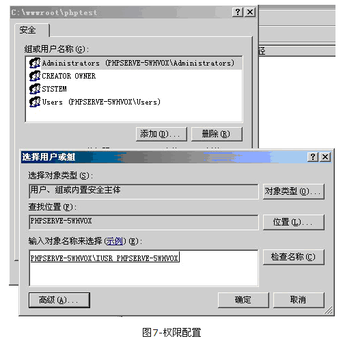
在网站名称上右键，点击属性，进入“属性”后点击“文档”选项卡，在此添加一个index.html和index.php（index.php添加好是为了待会不必再做配置），然后点击“确定”或者“应用”保存配置。
然后在浏览器中的地址栏中输入“http://localhost/”或者“http://127.0.0.1/”，即可看到刚才我们建立的index.html中的内容。
- 2.2 安装fastcgi
- IIS调试好后，就可以安装fastcgi了，首先需要下载IISfastcgi，下载地址是（http://www.iis.net/download/FastCGI），安装fastcgi非常简单，只需要同意协议后连续点击下一步即可，没有任何选项。
- 2.3 安装php
-
首先下载php在windows的安装包，下载地址http://windows.php.net/downloads/releases/archives/，选择版本的时候，需要注意一下，截止目前（2011年6月），支持zend加密组件的最后一个php版本是5.2.17，国内大多数主机商和程序能到达的版本只有5.3.4，目前08cmscms5.6在5.3.5和更高版本中后台会出现警告，但没有错误。这里选用php-5.3.4-nts-Win32-VC9-x86.msi做例子。
下载好php-5.3.4-nts-Win32-VC9-x86.msi后，双击文件安装，接受使用协议后，为php填写安装目录，这个目录是可以更换的，指向需要放置它的位置即可。
之后需要选择web服务器的安装，这里选择我们先前安装的IIS fastcgi（如图8所示）
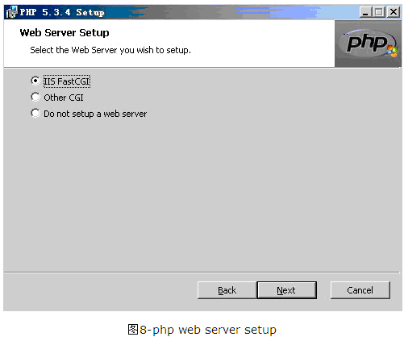
下一步需要配置安装选项，这里我们除了默认的选项之外增加了pear install(图9所示）
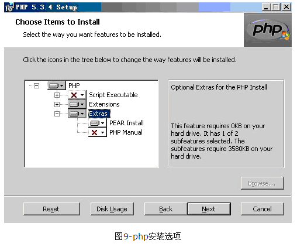
再进入下一步，就可以确认安装了。
完成安装后，还需要测试一下php是否可用。
首先打开IIS管理器，然后在先前测试IIS的网站上右键，进入“属性”，点击主目录选项卡，然后将“执行权限”配置为“纯脚本”，如图10所示
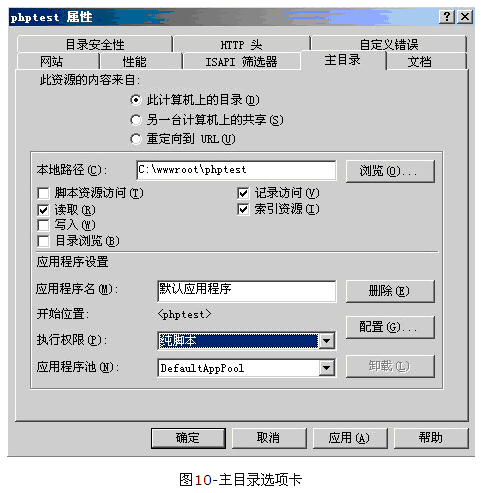
然后点击旁边的“配置”，擦看是否有.php扩展名，如果没有的话，需要添加一个新项，将可执行文件指向“C:WINDOWSsystem32inetsrvfcgiext.dll”，扩展名为“.php”（注意有个点），动作限制为“GET,HEAD,POST,TRACE”，点击确定即可（图11）
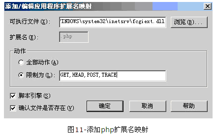
做好了这些，就可以写个小脚本来测试了，在网站的目录中新建一个test.php文件，打开后输入，保存后退出。
在浏览器地址栏中输入http://localhost/test.php，即可看到php信息了。
- 2.4 mysql安装（注：以下步骤同样适用于windows server 2008的mysql安装）
- 下载mysql(http://www.mysql.com)，安装过程比较简单，首先配置路径，然后选择安装选项，一般采用默认安装的方式，之后会进入一个配置向导界面（图12）
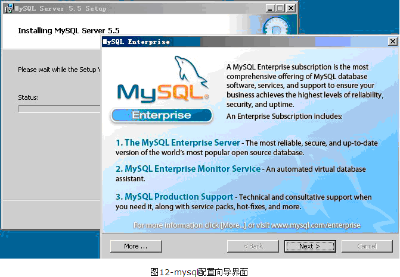
连续下一步，需要选择配置方式，这里选择配置方式，我们需要手动配置，所以选择detailed configuration，然后点击“下一步”(图13）
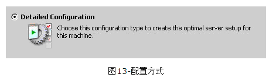
这里需要选择服务器类型，如果是开发用的测试环境，选择developer Machine ，如果是服务器用，则选择Server Machine，当然单一用途的服务器还可以选择dedicated mysql server machine。选择好后进入下一步(图14）
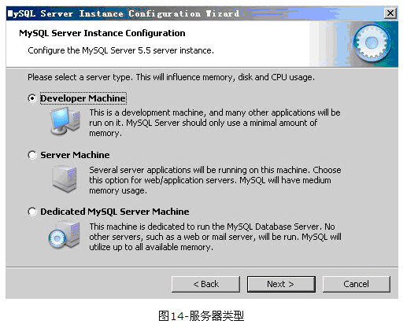
接下来是选择服务器使用，第一个是多功能数据库，可以使用 InnoDB engine和MyISAM engine。第二个选项，它的性能偏向于InnoDB，但是同时支持MyISAM engine。第三个选项是偏向于分析功能的MyISAM。至于这三个选项有什么区别，其实只要知道，MyISAM类型的数据库引擎可以为php提供强大的检索和分析功能。InnoDB的性能则偏重于存储。
所以如果只做web服务器的话选择第三项即可，如果是有其它用途，建议选择第一项。
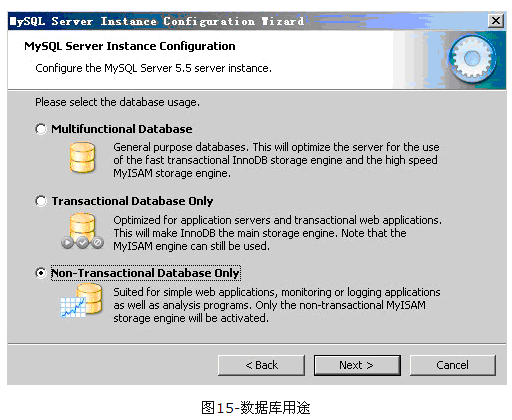
下一步需要选择服务器上的连接数量，这里如果是测试用的小服务器可以选择最少的第一项，如果是流量巨大的网站，需要选择第二项，或者第三项自行填写。
之后是网络连接的选项，“enable TCP/IP Networking”可以按照需求来选择，如果不做集群的话可以把勾去掉，如果是在内网环境，不为mysql做路由规则是完全可以打开此项的。可以直接添加一个防火墙例外给3306端口。端口号可以选择，但是推荐默认的3306。
还有一项是是否开启严谨模式，此项推荐勾选(图16）
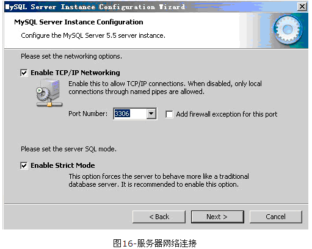
点击下一步，选择默认字符集，这里选择自定义的utf8字符集（图17）
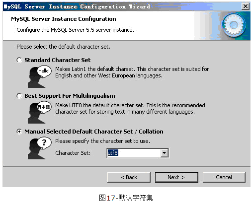
进入下一步，需要设定windows选项，这里推荐安装windows服务，并且自动启动。第二个选项，如果有必要，可以选择添加一个环境变量，可以方便命令行指向。（图18）
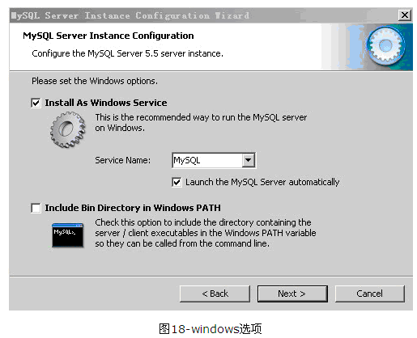
配置好后，进入下一步，需要为root用户设定密码，还有一个是否允许root用户从远程登录的选项，此处最好不勾选，否则安全性将会降低。
到此配置就全部结束了，点击下一步，会出现安装总结，点击“execute”执行安装即可。
安装成功后，我们依然需要对此进行测试。
打开刚才测试php时创建的test.php，我们使用pdo链接mysql作为测试。
输入
<?php
$db=new PDO("mysql:host=localhost;dbname=test","root","刚才设置的密码");
if ($db)
{
echo "ok";
}
?>
访问http://localhost/test.php，如果屏幕上打印出了ok，表示mysql安装成功。